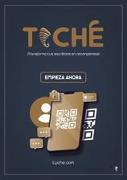

Proyecto Universitario: IA
Proyecto de Realidad Aumentada | 5to semestre
Junto con mis compañeros, desarrollamos un recorrido virtual de la empresa “El Salinerito”, aplicando tecnologías de realidad aumentada para mejorar la experiencia del usuario.

Conoce los proyectos en los que he trabajado a lo largo de mi formación académica y universitaria.
Estos son algunos de los proyectos más destacados en los que he participado, combinando creatividad, innovación y trabajo en equipo.
Junto con mis compañeros, desarrollamos un recorrido virtual de la empresa “El Salinerito”, aplicando tecnologías de realidad aumentada para mejorar la experiencia del usuario.
Elaboramos un análisis financiero sobre una empresa textil para evaluar la viabilidad de inversión, utilizando herramientas de datos y gestión económica.

Diseñamos un proyecto innovador como proyecto final, integrando distintas materias del semestre. Fue una experiencia clave para fortalecer la colaboración y el pensamiento emprendedor.
 Visitar página recomendada